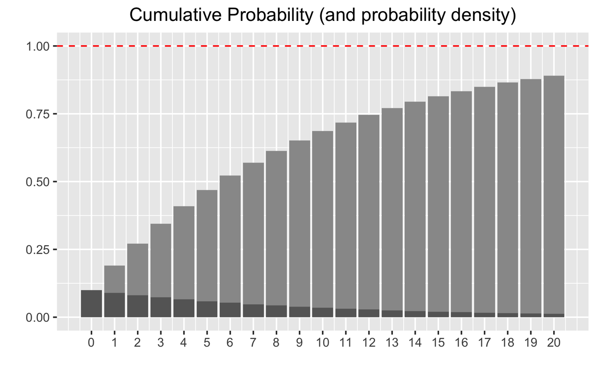

graph01
Probability distributions
ROUGH DRAFT
TODO: place equation on chart
Suppose you have a rare event, e.g. a machine that has a 10% chance of breaking each day. The probability that it fails after X days is given by an exponential distribution. This proability density function (pdf) is the proabability per day (dark gray).
$$ f(X) = \lambda e^{-\lambda X} $$
The probability that it survives X days is given by the cumulative probability distribution (gray), which adds up (sums/integrates) the probability up to that day, and hence is a monotonically increasing function.
$$ F(X) = \int_0^X f(t) dt = 1 - e^{-\lambda X} $$
library(tidyverse) x <- 0:20 #Domain dy <- dgeom(x, .1) #Probability density py <- pgeom(x, .1) #Cumulative probability distribution tibble(x, dy, py) %>% ggplot(aes(x)) + geom_col(aes(y = py), fill = "grey60") + geom_col(aes(y = dy), fill = "grey40") + scale_x_continuous(breaks = x) + geom_hline(yintercept = 1, color = "red", linetype = "dashed") + labs(x="", y="", title = "Cumulative Probability (and probability density)") + theme(plot.title = element_text(hjust = 0.5)) + #Centering title ggsave("cumulative_dist.png")